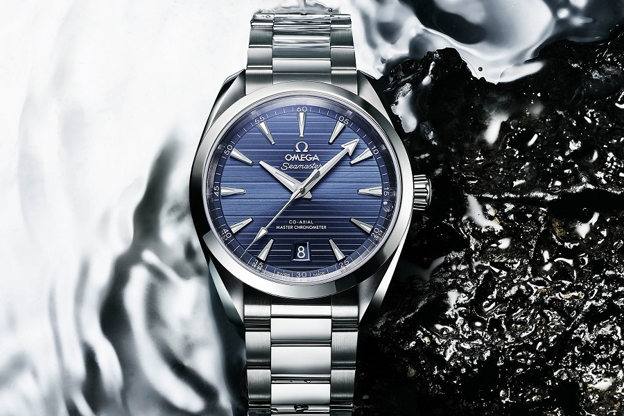

Aqua Terra
In 2002 Omega introduced a new chapter in the Seamaster family, the Omega Aqua Terra, an everyday watch that could be worn under any circumstances. The first models were introduced with the Co-Axial calibre 2500. This movement was based on an ETA movement and was one of the first ones with the George Daniels invention - the Co-Axial escapement. These movements were chronometer certified, which Omega said only needed to be serviced once every 6-8 years.

- Specificaties
- Prijs: $3.917
- Opwinden: Handopwind
- Bouwjaar: 1997
- Referentienummer: 3570.50.00
- Hoogte: 13.8mm
- Waterdicht:5 ATM
- Glas: Kuntstof
- Diameter: 42mm